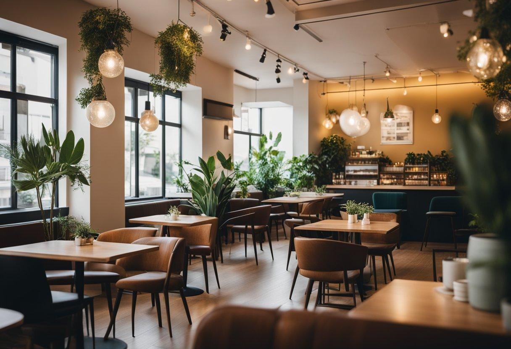

O naší kavárně
Aura Café je útulná kavárna v Plzni, kde si můžete v klidu vychutnat dobrou kávu, čerstvé dezerty a příjemnou atmosféru. Ať už se chcete zastavit na ranní kávu, posedět s přáteli nebo si jen na chvíli odpočinout, u nás jste vždy vítáni.

Co u nás najdete?
V naší nabídce najdete různé druhy kávy, od klasického espressa až po cappuccino nebo caffè latte. Ke kávě si můžete dát také něco sladkého, například cheesecake, tiramisu nebo čokoládový dort.
Proč navštívit právě nás?
Zakládáme si na příjemném prostředí, kvalitních surovinách a přátelském přístupu. Chceme, aby se u nás každý cítil dobře a rád se vracel.
Další informace
Více o kávě se můžete dozvědět na Wikipedii.
Naši kavárnu můžete také hledat pomocí Google Map.
Jak připravujeme naši kávu
Podívejte se, jak probíhá příprava kávy v naší kavárně.